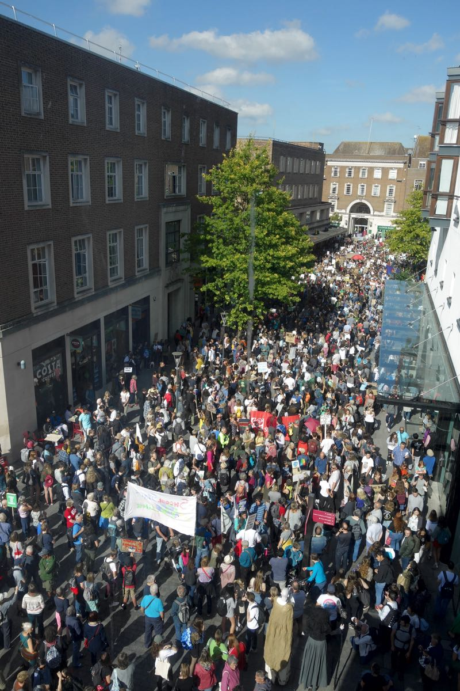

An estimated 3500 people marched through Exeter today as part of a global climate strike that saw more than 200 similar events take place across the UK, with millions demonstrating in 185 countries worldwide.
The march, which was led by Fridays for Future Exeter, part of the UK Student Climate Network, gathered in Bedford Street before setting off to County Hall via the High Street. So many people took part that the head of the march reached Magdalen Street before its last members had set off.
A samba band added to the festival atmosphere, which continued at County Hall with music, speakers and workshops. Free vegan food was laid on by volunteers.

Today’s climate strike was backed by dozens of organisations including Greenpeace UK, Friends of the Earth, the Royal Society for the Protection of Birds (RSPB), Black Lives Matter UK, Christian Aid and Amnesty UK.
Kumi Naidoo, Amnesty International Secretary General, wrote to almost 25,000 UK schools urging them to allow their pupils to take part.
He said: “The climate emergency is the defining human rights issue for this generation of children. Its consequences will shape their lives in almost every way imaginable. The failure of most governments to act in the face of overwhelming scientific evidence is arguably the biggest inter-generational human rights violation in history.”
“By taking part in these protests, children are exercising their human rights to freedom of expression, peaceful assembly, and to have a say in decisions and matters that affect their lives. In doing so, they are teaching us all a valuable lesson: the importance of coming together to campaign for a better future.”
The Trades Union Congress (TUC) also backed the strike at its annual conference in Brighton earlier this month.
Many unions, including NEU, NASUWT, NUJ, PCS, Prospect, UNISON, Unite and UCU, who proposed the TUC conference motion, organised their own workday campaign actions in solidarity with the student strikers.
Liza Sentance, Chair of Torbay & South Devon Trades Council, said: “The trade union movement was asked to support the kids on their strike today so that’s why I’m here, supporting them. I also have five grandchildren: their future is important as well. I’ve vowed not to buy any new clothes this year and I’ve sold my car.”
Stewart Ward, Exeter City Council UNISON branch secretary, said he was there “to support the young people in their protests” and “to show that, as a branch, we’re supporting what the council are doing by declaring a climate emergency and moving towards being carbon neutral in the future.”
Graeme Tweedy, mental health nurse and UNISON representative at Devon Partnership NHS Trust and Community Health, said he was there “because climate change is a health issue, it is something that affects everybody and is our number one threat.”
He said that the union had just run a green week to support the youth strikers, with stalls at Wonford House and the Royal Devon & Exeter Hospital to raise awareness of the issue.
All the UK’s main opposition parties backed today’s climate strike, although the Labour Party has been strongly criticised for allowing Heathrow, London City and Gatwick airports as well as oil company BP to sponsor events at its annual conference in Brighton this week.
Phil Bialyk, Exeter City Council leader and Labour councillor for Exwick, said: “I welcome the show of support from people of all ages who came out to raise awareness of the devastating effects of climate change.”
“It was great to see so many staff from the city council taking part and showing their commitment to the cause. There is clearly a lot of work to do to make an impact but we have made a commitment to creating a carbon-neutral city.”
Diana Moore, Green Party councillor for St David’s, said: “This is fantastic, the most amazing turnout I’ve ever seen for any campaign in Exeter. It sends such a strong message because it’s making decision-makers feel really uncomfortable. We need decision-makers to follow through on the things that they say.”
“Young people here are focussed on the issues they want us all to engage with. This is about science and understanding its insights. It’s about making sure young people have the skills and knowledge they need for jobs for the future.”
Kevin Mitchell, Liberal Democrat councillor for Duryard & St James, said: “I’m here because we only have one planet, so it’s very important that everyone is here today making their voices heard to ensure that the right agenda and the right policies come forward at all levels, whether that’s local level, council level, all the way up to government and globally as well.”
“Hopefully this will put more pressure on those authorities and on Exeter City Council to implement its climate emergency agenda.”
When asked about the county council’s response to the situation, he said: “I’m extremely frustrated at the lack of movement. You can declare something, which is all well and good, but that’s just words. It’s more about the action required to ensure that you have the right policies and the right things happening on the ground so we do the right thing for our city and our planet. At the moment I don’t think that’s happening.”
Tom Deakin, Liberal Democrat parliamentary candidate for Exeter, said: “I think it’s wonderful that so many people have come out today, young and old, to stand up for the future of our planet. I think it’s a real shame that we’ve had to get to this point, where it’s this kind of action that’s necessary to make government and those in control of the global order actually listen. I’m here to support the young people who are standing up for their future.”
With the exception of Lush, which closed down all its global operations for the day, including its factories and shops, and replaced its website with a low energy holding page, the rest of Exeter’s city centre chain retailers remained open.
However, several independent local businesses closed for the day to support the strike and allow their staff to attend the march. These included Hilton Barnfield Architects, The Real Food Store and The Roots Foundation.
Other local organisations also took part in the march. Tony Whitehead of RSPB South West said: “We are supporting this climate strike today because we want to show solidarity with the thousands of young people who are so passionate about this cause, who are clearly saying here, and around the world, that they’ve had enough, change needs to happen and it needs to happen urgently.”
“This must be one of the biggest demonstrations in Exeter’s history. I’ve lived here for 30 years and I’ve never seen one as big as this. It is just amazing. I hope people are listening and that they’ll take action.”
Today’s strike took place the eve of a UN Climate Action Summit in New York called by its secretary general António Guterres to inject urgency into government action to restrict the rise in global temperatures to 1.5°C, the target adopted in the 2015 Paris agreement.
He has called on all leaders to attend the meeting on 23 September with “concrete, realistic plans” to rapidly reduce greenhouse gas emissions and “show the way toward a full transformation of economies in line with sustainable development goals.”
In an interview with Covering Climate Now earlier this week, he praised the “fantastic leadership” of young climate activists and said he was counting on public pressure to compel governments to take much bolder action.
Greta Thunberg, who started the global youth climate strike movement in a lone protest outside the Swedish parliament just over a year ago, will speak at the inaugural Youth Climate Summit on 21 September.
She told members of Congress to pay attention to scientists’ warnings about global heating and “to take real action” during a congressional hearing in Washington last week.
Addressing a huge crowd at the New York march today she said: “We demand a safe future. Is that really to much to ask?”


{kind=link}
{kind=link}
{kind=link}